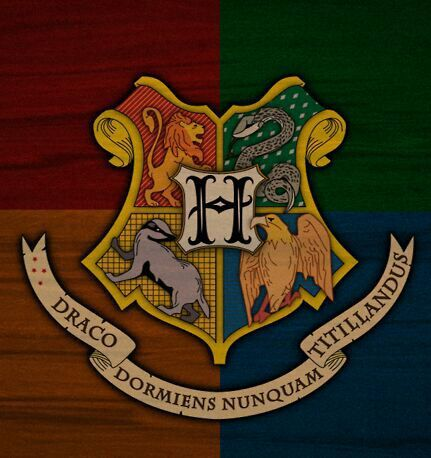

Em Hogwarts, os alunos são organizados nas suas tradicionais quatro casas: Grifinória, Sonserina, Lufa-Lufa e Corvinal. Cada casa tem uma abordagem distinta ao aprendizado da língua inglesa, mas todas compartilham o objetivo comum de dominar a língua e utilizá-la de forma eficaz.

Grifinória
Os alunos dessa casa são caracterizados pela coragem, criatividade e paixão pela escrita. Eles se destacam em redações criativas, composição literária e discursos emocionantes.
Sonserina
Os alunos de Sonserina tem uma habilidade natural para argumentação e persuasão. Eles são os mestres da retórica e da interpretação de textos.
Lufa-Lufa
Os estudantes de Lufa-Lufa são os mais meticulosos e dedicados. Seu foco é no estudo rigoroso da gramática, vocabulário e estrutura de frases.
Corvinal
Corvinal reúne os alunos mais intelectuais, apaixonados por literatura clássica e moderna. Eles se destacam em análises literárias profundas, leitura crítica e produção acadêmica.